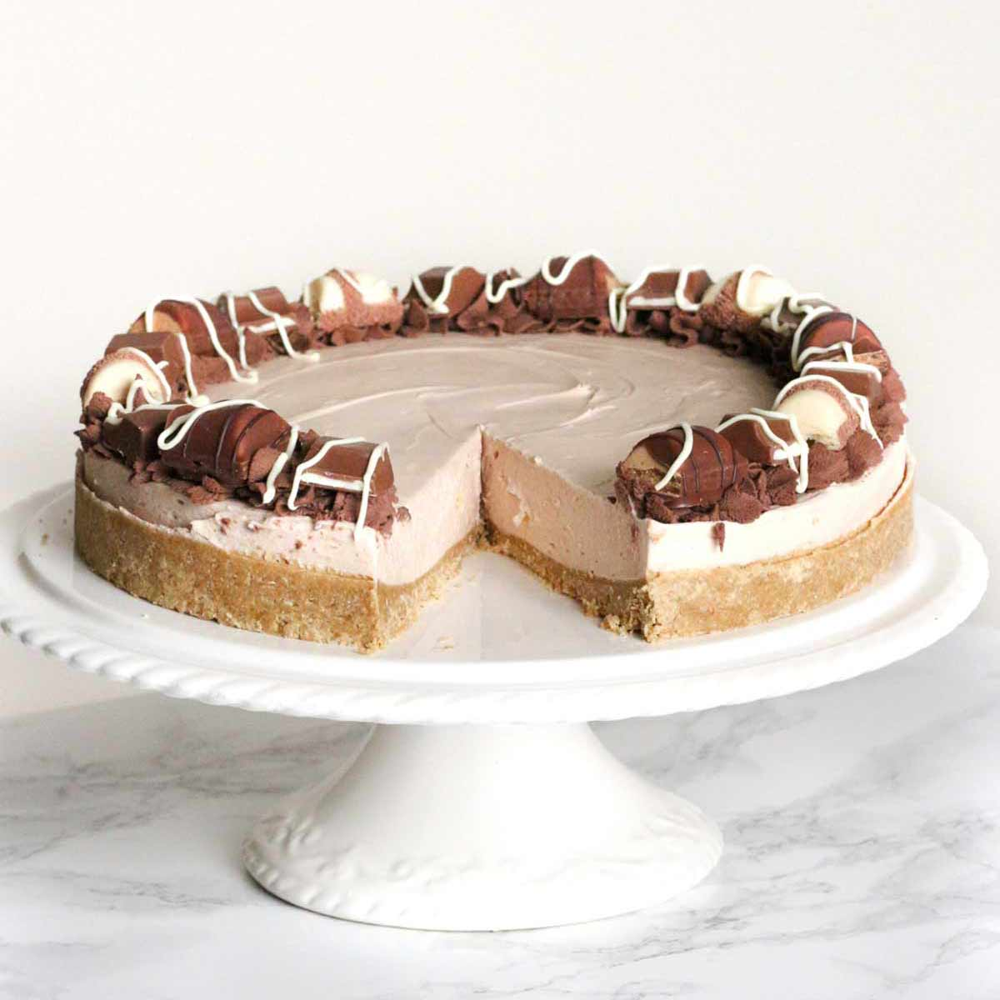

Cheesecake sa Kinder čokoladom
Ovdje možete pronaći recept za brzi, jednostavni i ukusni Cheesecake sa Kinder čokoladom
koji ne zahtijeva pečenje, a može ga pripremiti baš svatko!
Sastojci:
- 350 g mljevenih Digestive keksi
- 180 g otopljenog maslaca
- 200 g otopljene i ohlađene Kinder čokolade
- 500 ml vrhnja za šlag
- 500 g krem sira
- 120 g šećera u prahu
- 200 g Kinder čokolade
- 120 ml vrhnja za šlag
- 4 prutića Kinder čokolade
Postupak pripreme:
- Maslac otopi i pomiješaj ga s Digestive keksima koje si prije toga samljela u blenderu. Od ova dva sastojka napravi bazu za cheesecake i stavi ju u kalup.
- Kinder čokoladu (200 g) stavi u zdjelicu i otopi ju na 30 sekundi u mikrovalnoj te ostavi sa strane da se ohladi.
- U zdjelu ulij 500 ml vrhnja za šlag i izradi ga mikserom. Nakon toga u posebnu zdjelu stavi 500 g krem sira i 120 g šećera u prahu te izradi mikserom.
- U smjesu s krem sirom ulij prethodno otopljenu i ohlađenu Kinder čokoladu i dobro izmiksaj, a zatim u tu smjesu postupno dodaj 3/4 šlaga.
- Smjesu zatim ulij u kalup i izravnaj te stavi u frižider preko noći da očvrsne.
- Iduće jutro u mikrovalnoj na 30 sekundi otopi 200 g Kinder čokolade i 120 ml vrhnja za šlag te prelij preko torte nakon što se ohladi.
- S ostatkom šlaga i 4 prutića Kinder čokolade ukrasi tortu i posluži.